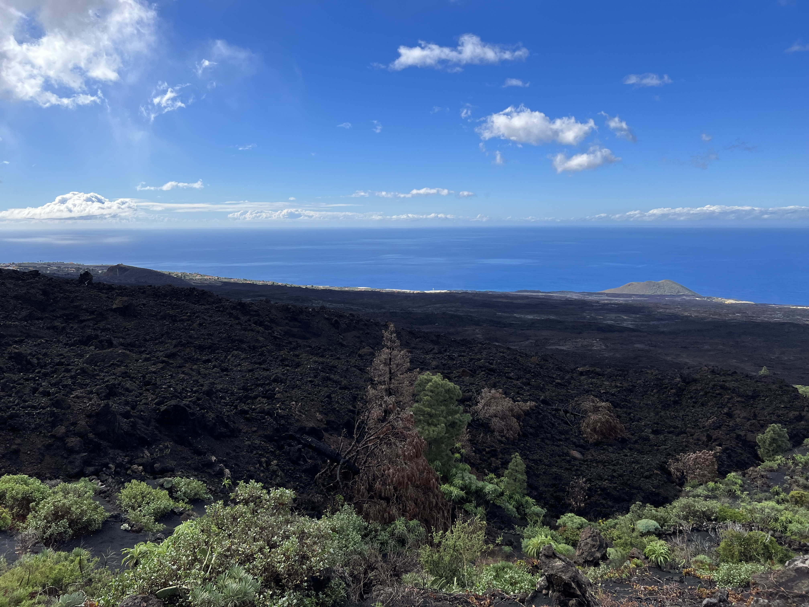

Im Dokeumengt werden Medien eingebunden
Home
Medien im HTML
Strukturierung mit Div
Strukturierung mit HTML5
Text im HTML
Verlinkungen im HTML
Tabellen im HTML
Formulare im HTML
Nach dem Vulkanausbruch auf La Palma
Bilder vom Januar 2023
Ausblick von El Paso in Richtung Tazacorte

Animiertes Gif einsetzen
Audio-File
In dem Browser nicht abspielbar
Video-File
In dem Browser nicht abspielbar